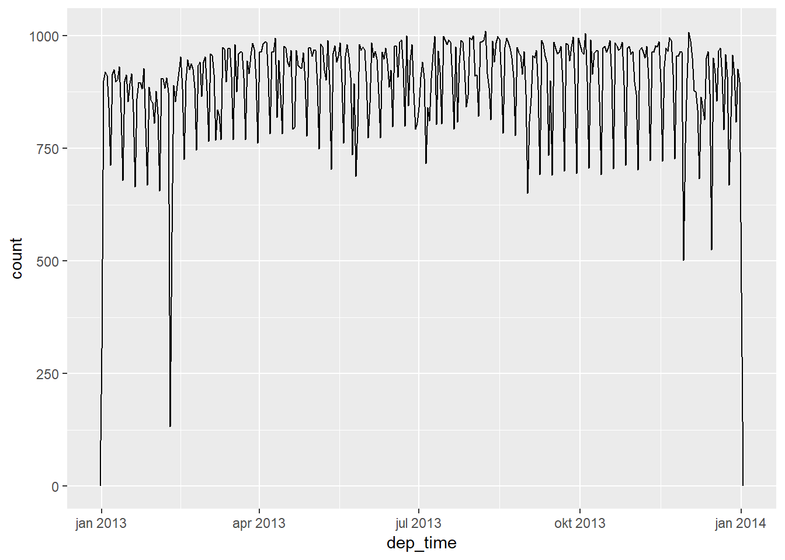
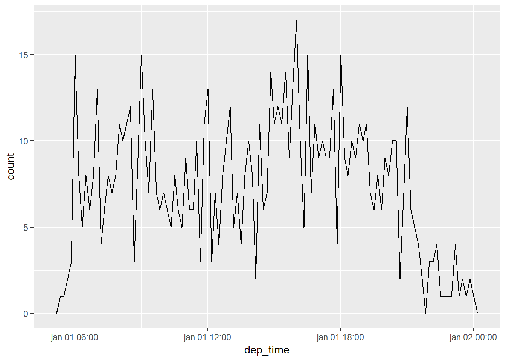
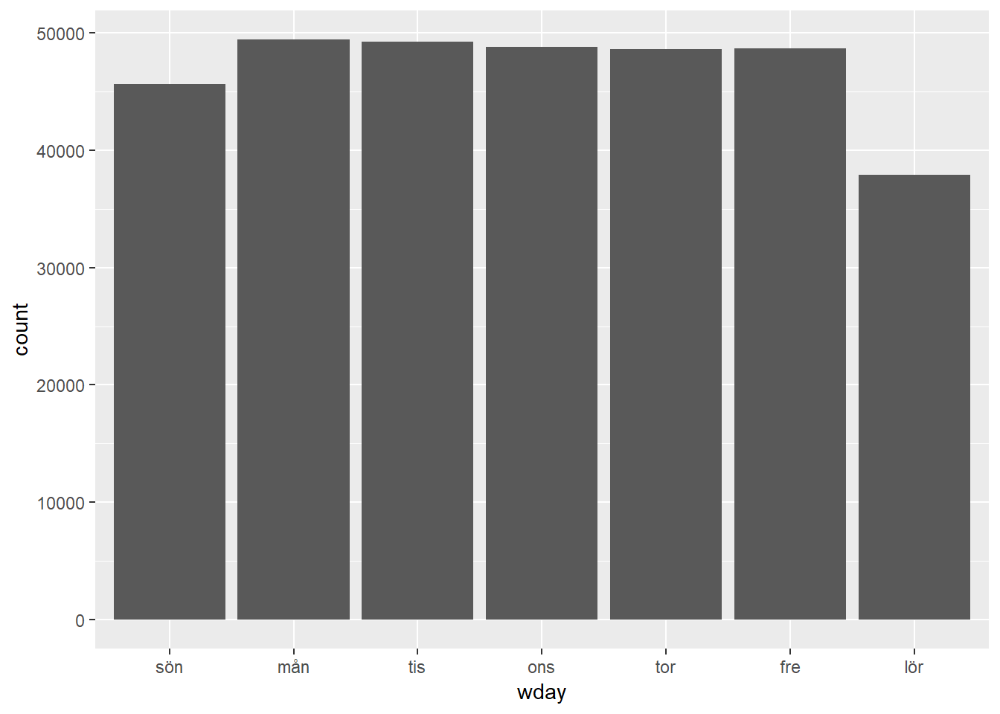
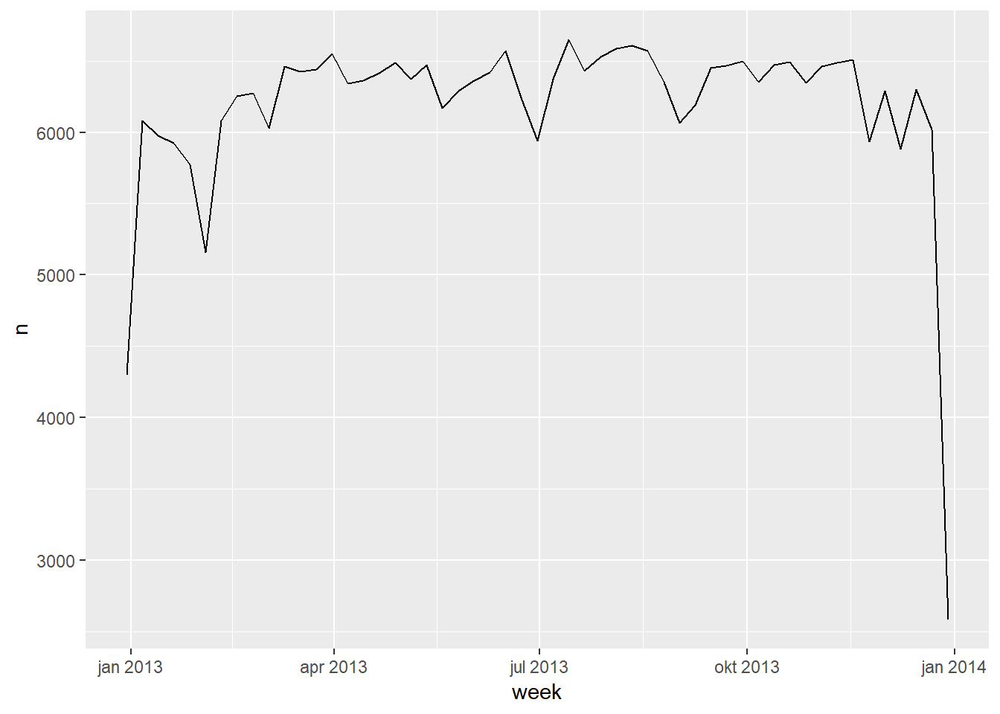

16 Datum och tidsformat
16.1 Introduktion
Detta avsnitt handlar om att hantera datum- och tidsformat. Det är en översiktlig genomgång för att få de nödvändigaste verktygen. Det finns betydligt mer detaljer i Wickhams bok (http://r4ds.had.co.nz/dates-and-times.html) vilken behandlar mycket av den komplexitet som ryms i datum- och tidsvariabler särskilt i en global kontext.
Vi ska arbeta med modulen lubridate som innehåller verktyg för att hantera datum och tid. Data till exemplen finns i nycflights13. Vi laddar in
##
## Attaching package: 'lubridate'## The following object is masked from 'package:hms':
##
## hms## The following object is masked from 'package:base':
##
## date16.2 Skapa datum och tid
Det finns tre typer av datum/tid-data som refererar till en specifik tidpunkt:
- Ett datum. Tibbles betcknar dessa som
. - Ett klockslag. Tibbles betecknar dessa som
- En datumtid (date-time) är ett klockslag plus ett datum. Det identifierar en tidpunkt (preciserad vanligen till närmaste sekund). Tibbles betecknar dessa som
. I base R kallas dessa för POSIXct, men Wickham har valt för större klarhet.
Om du kan använda ett datum istället för datumtid bör du göra det eftersom datumtid är betydligt mer komplicerat (behöver hantera tidszoner).
För att få aktuellt datum eller datumtid kan du använda today() resp now():
## [1] "2019-03-10"## [1] "2019-03-10 09:51:41 CET"Det finns tre andra sätt att skapa datum/tid-data:
- Från en textsträng
- Från enskilda datum/tid-komponenter
- Från ett existerande datum/tid-objekt
16.2.1 Från textsträngar
Ett sätt att hantera datumformat från textsträngar har vi sett tidigare (date-times).
Ett annat sätt är att använda verktygen i lubridate. De tolkar automatiskt formatet när du väl definierat hur år (y), månad (m) och dag (d) är ordnade. Den ordningen anger även namnet på funktionen i lubridate som används för att generera datum-objektet:
## [1] "2017-01-31"## [1] "2017-01-31"## [1] "2017-01-31"Dessa funktioner accepterar även siffror utan citationstecken:
## [1] "2017-01-31"För att skapa en datumtid kan du lägga till en underscore och ett eller fler av “h”, “m”, and “s” för att få namnet från till rätt funktion:
## [1] "2017-01-31 20:11:59 UTC"## [1] "2017-01-31 08:01:00 UTC"16.2.2 Från enskilda kompnenter
Istället för en textsträng kan du ha datum och tid som enskilda komponenter spridda över flera kolumner, som i nycflights13:
## # A tibble: 336,776 x 5
## year month day hour minute
## <int> <int> <int> <dbl> <dbl>
## 1 2013 1 1 5 15
## 2 2013 1 1 5 29
## 3 2013 1 1 5 40
## 4 2013 1 1 5 45
## 5 2013 1 1 6 0
## 6 2013 1 1 5 58
## 7 2013 1 1 6 0
## 8 2013 1 1 6 0
## 9 2013 1 1 6 0
## 10 2013 1 1 6 0
## # ... with 336,766 more rowsFör att skapa datum/tid från sådan input kan du använda make_date() för datum eller make_datetime() för datumtid:
flights %>%
select(year, month, day, hour, minute) %>%
mutate(departure = make_datetime(year, month, day, hour, minute))## # A tibble: 336,776 x 6
## year month day hour minute departure
## <int> <int> <int> <dbl> <dbl> <dttm>
## 1 2013 1 1 5 15 2013-01-01 05:15:00
## 2 2013 1 1 5 29 2013-01-01 05:29:00
## 3 2013 1 1 5 40 2013-01-01 05:40:00
## 4 2013 1 1 5 45 2013-01-01 05:45:00
## 5 2013 1 1 6 0 2013-01-01 06:00:00
## 6 2013 1 1 5 58 2013-01-01 05:58:00
## 7 2013 1 1 6 0 2013-01-01 06:00:00
## 8 2013 1 1 6 0 2013-01-01 06:00:00
## 9 2013 1 1 6 0 2013-01-01 06:00:00
## 10 2013 1 1 6 0 2013-01-01 06:00:00
## # ... with 336,766 more rowsVi gör samma sak för var och ett av de fyra kolumnerna i flights. (Eftersom tidsdata i dessa kolumner är lite udda använder vi moduloräkning för att få ut timmmar och minuter):
make_datetime_100 <- function(year, month, day, time) {
make_datetime(year, month, day, time %/% 100, time %% 100)
}
flights_dt <- flights %>%
filter(!is.na(dep_time), !is.na(arr_time)) %>%
mutate(
dep_time = make_datetime_100(year, month, day, dep_time),
arr_time = make_datetime_100(year, month, day, arr_time),
sched_dep_time = make_datetime_100(year, month, day, sched_dep_time),
sched_arr_time = make_datetime_100(year, month, day, sched_arr_time)
) %>%
select(origin, dest, ends_with("delay"), ends_with("time"))
flights_dt## # A tibble: 328,063 x 9
## origin dest dep_delay arr_delay dep_time sched_dep_time
## <chr> <chr> <dbl> <dbl> <dttm> <dttm>
## 1 EWR IAH 2 11 2013-01-01 05:17:00 2013-01-01 05:15:00
## 2 LGA IAH 4 20 2013-01-01 05:33:00 2013-01-01 05:29:00
## 3 JFK MIA 2 33 2013-01-01 05:42:00 2013-01-01 05:40:00
## 4 JFK BQN -1 -18 2013-01-01 05:44:00 2013-01-01 05:45:00
## 5 LGA ATL -6 -25 2013-01-01 05:54:00 2013-01-01 06:00:00
## 6 EWR ORD -4 12 2013-01-01 05:54:00 2013-01-01 05:58:00
## 7 EWR FLL -5 19 2013-01-01 05:55:00 2013-01-01 06:00:00
## 8 LGA IAD -3 -14 2013-01-01 05:57:00 2013-01-01 06:00:00
## 9 JFK MCO -3 -8 2013-01-01 05:57:00 2013-01-01 06:00:00
## 10 LGA ORD -2 8 2013-01-01 05:58:00 2013-01-01 06:00:00
## # ... with 328,053 more rows, and 3 more variables: arr_time <dttm>,
## # sched_arr_time <dttm>, air_time <dbl>Med dessa data kan vi visualisera fördelningen av avgångstider över året:

Eller över en enskild dag:
flights_dt %>%
filter(dep_time < ymd(20130102)) %>%
ggplot(aes(dep_time)) +
geom_freqpoly(binwidth = 600) # 600 s = 10 minutes
Notera att när man använder datumtid-formatet i en numerisk kontext anger siffran 1 en (1) sekund (därav binwidth = 86400 således 1 dygn). För datum-format gäller 1 för 1 dygn.
16.2.3 Från andra datum/tid-format
Om du vill omvandla datumtid och datum används as_datetime() resp as_date():
## [1] "2019-03-10 UTC"## [1] "2019-03-10"Ibland får man datum/tidsdata som numeriska offsets från ett visst datum, t.ex. “Unix Epoch”, 1970-01-01. Om offset är i sekunder använd as_datetime(), om det är i dagar använd as_date():
## [1] "1970-01-01 10:00:00 UTC"## [1] "1980-01-01"16.2.4 Övningar
- Vad händer om du försöker processa en textsträng med ogiltiga datum?
## Warning: 1 failed to parse.## [1] "2010-10-10" NA- Vad gör argumentet
tzonetill funktionentoday()? Varför är det viktigt? - Använd en lämplig funktion för att omvandla följande datum-format:
16.3 Datum/tid-komponenter
Vad kan man göra med datum/tid-variabler rent praktiskt? Den här sektionen beskriver hur du extraherar och definierar enskilda komponenter och i nästa går vi igenom hur man utför aritmetiska operationer med dem.
16.3.1 Extrahera komponenter
Du kan extrahera enskilda delar i ett datum/tid-objekt med access-funktionerna year(), month(), mday() (dag i månad), yday() (dag i året), wday() (veckodag), hour(), minute() och second().
## [1] 2016## [1] 7## [1] 8## [1] 190## [1] 6För month() och wday() kan du sätta argumentet label = TRUE för att returnera förkortat månadsnamn resp veckodag. Ange abbr = FALSE för att returnera hela namnet.
## [1] jul
## 12 Levels: jan < feb < mar < apr < maj < jun < jul < aug < sep < ... < dec## [1] fredag
## 7 Levels: söndag < måndag < tisdag < onsdag < torsdag < ... < lördagVi kan använda wday() för att se att fler flighter avgår under vardagar än under helger:

16.3.2 Avrundning
Ett alternativt sätt att plotta enskilda komponenter är att avrunda datum till en närliggande tidpunkt. Det kan man göra via floor_date(), round_date() och ceiling_date(). Varje funktion tar två argument: en datum-vektor som ska avrundas och ett till vad värdena ska avrundas. T.ex. kan vi med hjälp av floor_date() plotta antalet flighter per vecka:

16.3.3 Ange komponenter
Du kan använda varje accessfunktion för att definiera komponenterna i ett datum/tid-formnat:
## [1] "2016-07-08 12:34:56 UTC"## [1] "2020-07-08 12:34:56 UTC"## [1] "2020-01-08 12:34:56 UTC"## [1] "2020-01-08 13:34:56 UTC"Alternativt kan du skapa ett nytt datum/tid-objekt med hjälp av update(). Då kan du ange flera komponnenter på samma gång:
## [1] "2015-03-02"## [1] "2015-02-17 16:00:00 UTC"16.4 Tidsintervall
Hur fungerar aritmetiska operationer med datum/tid-format? Vi går igenom tre viktiga klasser som representerar tidsintervall:
- varaktighet (durations), som representerar ett exakt antal sekunder
- Perioder (periods), representerar ofta använda tids-enheter, t.ex. veckor och dagar
- Intervall (intervals), representerar en start- och slutpunkt
16.4.1 Varaktighet
När man subtraherar två datum i R erhåller man ett difftime-objekt.
## Time difference of 7373 daysEtt difftime-objekt innehåller ett tidsspann i sekunder, minuter, timmar dagar eller veckor. Denna tvetydighet kan vara irriterande så lubridate erbjuder ett alternativ som alltid använder sekunder (duration):
## [1] "637027200s (~20.19 years)"Duration har ett antal smidiga funktioner:
## [1] "15s"## [1] "600s (~10 minutes)"## [1] "43200s (~12 hours)" "86400s (~1 days)"## [1] "0s" "86400s (~1 days)" "172800s (~2 days)"
## [4] "259200s (~3 days)" "345600s (~4 days)" "432000s (~5 days)"## [1] "1814400s (~3 weeks)"## [1] "31536000s (~52.14 weeks)"Högre tidsenheter än sekunder skapas genom att omvandla minuter, timmar osv till sekunder enligt “standard-mått” (60 sek är en minut, 60 min är en timma, 24 timmar ett dygn , 7 dygn är en vecka, 365 dagar är ett år).
Du kan addera och multiplicera durations:
## [1] "63072000s (~2 years)"## [1] "38847600s (~1.23 years)"Du kan addera och subtrahera durations till och från dagar:
16.4.2 Perioder
Perioder är tidsspann utan en fixerad längd i sekunder. Istället räknar den med mer “människo-bekanta” storheter som dagar eller månader. Det gör beräkningar mer intuitiva:
## [1] "2016-03-12 13:00:00 UTC"## [1] "2016-03-13 13:00:00 UTC"Även här finns ett antal smidiga funktioner:
## [1] "15S"## [1] "10M 0S"## [1] "12H 0M 0S" "24H 0M 0S"## [1] "7d 0H 0M 0S"## [1] "1m 0d 0H 0M 0S" "2m 0d 0H 0M 0S" "3m 0d 0H 0M 0S" "4m 0d 0H 0M 0S"
## [5] "5m 0d 0H 0M 0S" "6m 0d 0H 0M 0S"## [1] "21d 0H 0M 0S"## [1] "1y 0m 0d 0H 0M 0S"Du kan addera och multiplicera perioder:
## [1] "60m 10d 0H 0M 0S"## [1] "50d 25H 2M 0S"Och addera dem till datum:
## [1] "2016-12-31"## [1] "2017-01-01"Låt oss använda perioder för att fixa en knepighet i flights. Några plan verkar ha ankommit till destinationen innan de startade från NYC:
## # A tibble: 10,633 x 9
## origin dest dep_delay arr_delay dep_time sched_dep_time
## <chr> <chr> <dbl> <dbl> <dttm> <dttm>
## 1 EWR BQN 9 -4 2013-01-01 19:29:00 2013-01-01 19:20:00
## 2 JFK DFW 59 NA 2013-01-01 19:39:00 2013-01-01 18:40:00
## 3 EWR TPA -2 9 2013-01-01 20:58:00 2013-01-01 21:00:00
## 4 EWR SJU -6 -12 2013-01-01 21:02:00 2013-01-01 21:08:00
## 5 EWR SFO 11 -14 2013-01-01 21:08:00 2013-01-01 20:57:00
## 6 LGA FLL -10 -2 2013-01-01 21:20:00 2013-01-01 21:30:00
## 7 EWR MCO 41 43 2013-01-01 21:21:00 2013-01-01 20:40:00
## 8 JFK LAX -7 -24 2013-01-01 21:28:00 2013-01-01 21:35:00
## 9 EWR FLL 49 28 2013-01-01 21:34:00 2013-01-01 20:45:00
## 10 EWR FLL -9 -14 2013-01-01 21:36:00 2013-01-01 21:45:00
## # ... with 10,623 more rows, and 3 more variables: arr_time <dttm>,
## # sched_arr_time <dttm>, air_time <dbl>Dessa är flighter som sträcker sig över midnatt. Vi använder samma datum för för både avgångar och ankomster, men dessa flighter ankom påföljande dygn. Vi kan fixa detta genom att addera days(1) till ankomsttiden för varje sådan flight:
flights_dt <- flights_dt %>%
mutate(
overnight = arr_time < dep_time,
arr_time = arr_time + days(overnight * 1),
sched_arr_time = sched_arr_time + days(overnight * 1)
)
flights_dt %>%
filter(overnight, arr_time < dep_time) ## # A tibble: 0 x 10
## # ... with 10 variables: origin <chr>, dest <chr>, dep_delay <dbl>,
## # arr_delay <dbl>, dep_time <dttm>, sched_dep_time <dttm>,
## # arr_time <dttm>, sched_arr_time <dttm>, air_time <dbl>,
## # overnight <lgl>16.4.3 Intervall
Det är uppenbart att dyears(1) / ddays(365) borde ge 1, eftersom durations alltid räknas i sekunder och ddays(365) = dyear(1).
Men om vi använder perioder, vad ger years(1)/days(1)? Ja, om året var 2015 skulle det ge 365 men om det var 2016 skulle det bli 366. lubridate innehåller helt enkelt inte tillräckligt med information för att ge ett entydigt svar. Istället får man en skattning tillsammans med en varning:
## estimate only: convert to intervals for accuracy## [1] 365.25Om du vill ha ett mer exakt besked behöver du använda ett intervall. Ett intervall är en duration med en startpunkt:
## [1] 36616.5 Summering
Vilket av duration, period och intervall ska man välja? Som vanligt, använd det enklaste alternativet som är tillräckligt för att lösa ditt problem. Om du enbart är intresserad av tid som sådan, använd en duration; om du behöver addera “människo-vänliga” tidpunkter, använd en period; om du behöver beräkna hur lång ett tidsspann är använd ett intervall.
Figuren nedan summerar tillåtna aritmetiska operationer för de olika alternativen:

I Wickhams bok finns en handfull övningar med tidsintervall (http://r4ds.had.co.nz/dates-and-times.html#exercises-47) och som vi hoppar över här.